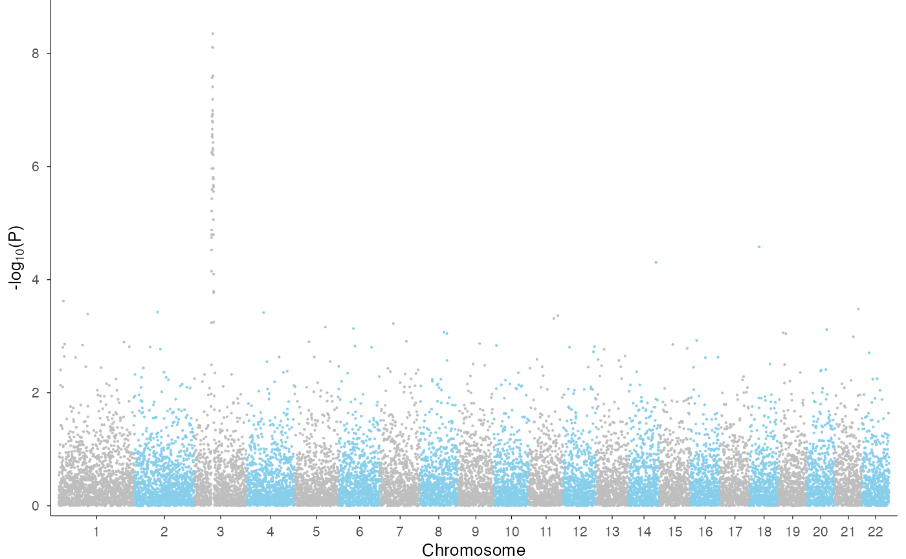

library(ezGenomeTracks)
#> ezGenomeTracks v0.0.1
#> Easy and flexible genomic track visualization
#> Use citation('ezGenomeTracks') to see how to cite this package
#> For documentation and examples, visit: https://github.com/zmu/ezGenomeTracksezGenomeTracks allows for two type of Manhattan plots.
First, a genome-wide Manhattan when more than one chromosome is
involved. This is very typical for GWAS results. Second, a region-level
Manhattan plot, which is more similar to a LocusZoom plot.
Genome-wide Manhattan plot
We use the example GWAS data from qqman package to
demonstrate genome-wide Manhattan.
library(qqman)
#>
#> For example usage please run: vignette('qqman')
#>
#> Citation appreciated but not required:
#> Turner, (2018). qqman: an R package for visualizing GWAS results using Q-Q and manhattan plots. Journal of Open Source Software, 3(25), 731, https://doi.org/10.21105/joss.00731.
#>
head(gwasResults)
#> SNP CHR BP P
#> 1 rs1 1 1 0.9148060
#> 2 rs2 1 2 0.9370754
#> 3 rs3 1 3 0.2861395
#> 4 rs4 1 4 0.8304476
#> 5 rs5 1 5 0.6417455
#> 6 rs6 1 6 0.5190959
ez_manhattan(
input = gwasResults,
chr = "CHR",
bp = "BP",
p = "P",
color_by = "CHR",
colors = c("grey", "skyblue")
)